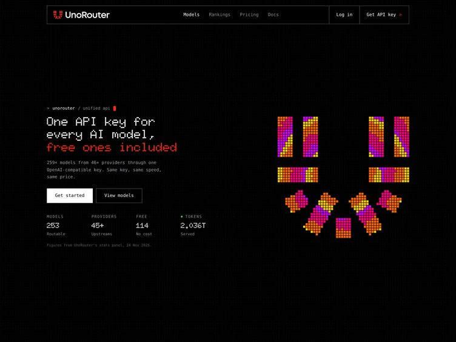

Unorouter
by Deividas Bielskis
AI · SaaSAI · SaaS
黑底着陆页，像素风笑脸由品红橙黄小方块拼成，One API key for every AI model, free ones included 一句话点题，下方 259 个模型、45+ 供应商、114 个免费、2.036T tokens 四个数字背书；开发者工具用“一张像素脸 + 四个大数字”把聚合 API 的卖点讲得又酷又可信。Unorouter's black landing page pairs a pixel-art smiley in magenta and orange with “One API key for every AI model, free ones included,” backed by four numbers — 259 models, 45+ providers, 114 free, 2.036T tokens served; one pixel face and four big numbers make an API aggregator feel both cool and credible.